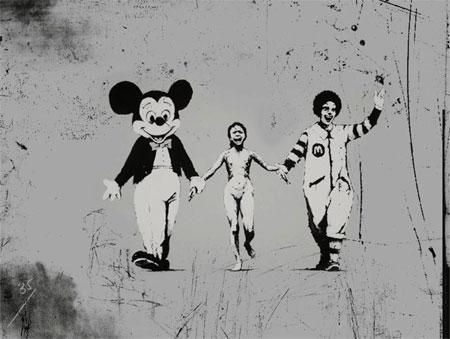

Credit
Banksy created Napalm Girl in 2004. It features a reproduction of an iconic photograph of a young girl during a napalm bombing in Vietnam in the seventies. In Banksy’s version the terrified naked girl is caught between Ronald McDonald and Mickey Mouse. The piece was created on cartridge paper and has been exhibited internationally in many different galleries.
2004-09
Spray Paint
London, UK